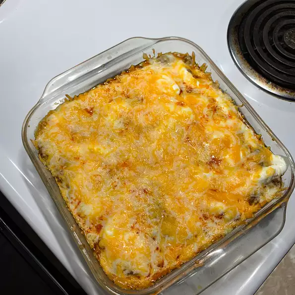

Taco Pie Recipe

Description:
Taco Pie. Food good.make this. poop.
Ingredients:
- 1 (8 ounce) package refrigerated crescent rolls
- 1 pound ground beef
- 1 (1 ounce) package taco seasoning mix
- 1 (16 ounce) container sour cream
- 8 ounces shredded Mexican-style cheese blend
- 1 (14 ounce) bag tortilla chips, crushed
Steps:
- Preheat the oven to 350 degrees F (175 degrees C).
- Lay crescent dough flat on the bottom of a 9-inch square pan and bake according to package directions.
- Meanwhile, heat a large skillet over medium-high heat. Cook and stir ground beef in the hot skillet until browned and crumbly, 5 to 7 minutes. Stir in taco seasoning.
- Spoon beef filling into prebaked crust; add a layer of sour cream and sprinkle with shredded cheese. Top with crushed nacho chips.
- Bake in the preheated oven until cheese has melted, about 10 minutes.